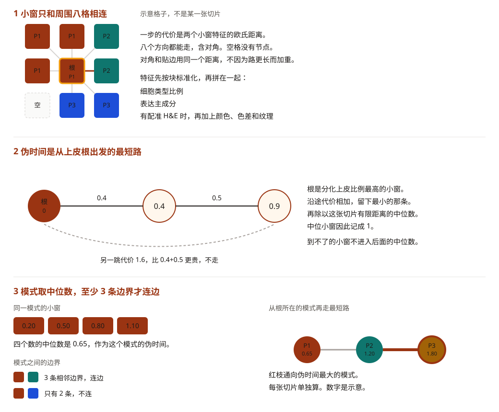

17 张 Takano 切片，和原来 3 张片子
17 张是单独跑的一轮，小窗边长 800 微米，没有把 CosMx 和另外三张公开 Xenium 混进去。原来 3 张的完整页面还在，边长仍是 400 微米。数字都来自种子 42。
17 张的完整结果 · 原来 3 张的完整结果 · 四种小窗边长 · 十张的组成和图像 · 轨迹怎么算
轨迹怎么算
轨迹在聚类之后按切片计算，对应 Pham 等人 2023 年 Nature Communications 的 pseudo-time-space。下图是算法本身。格子里的数是示意，不是某张切片的测量。原来 3 张走出的树在完整结果。

每个小窗只和周围八格相连，含对角。一步的代价是特征的欧氏距离。特征是标准化后的细胞类型比例和表达主成分；原来 3 张还有配准 H&E 的颜色、色差和纹理，17 张 Takano 没有。根是这张切片上分化上皮比例最高的小窗，用到的列是肺泡、气道、正常上皮、AT1、AT2 样和纤毛里实际存在的那些。伪时间是从根走出的最小总代价，再除以该切片有限距离的中位数。
一个模式的伪时间是它那些到得了的小窗的中位数。两个模式至少有 3 对相邻小窗才连边，边权是这些边界上特征距离的中位数。模式树是从根所在模式出发的最短路。红枝通向伪时间最大的模式。三张公开切片和 17 张都是每张单独算，没有接成一条轨迹。
放在一起看
| 原来 3 张，已发布的那一轮 | 原来 3 张，用现在这套代码重跑 | 17 张 Takano，800 µm | |
|---|---|---|---|
| 切片 | 5k、lc、luad，三套不同面板 | 同样这三张 | Takano 的 17 张肺腺癌，同一套面板，每张一位病人 |
| 留下的细胞 | 563,482 | 563,013 | 2,382,221 |
| 小窗 | 785 | 785 | 879 |
| 共有基因 | 153，含配准 H&E | 133 个基因表达，含配准 H&E，按切片减去均值 | 302 个基因表达，没有配准 H&E，按切片减去均值 |
| 第二步 | 全体小窗一次 k-means，再按 BIC 做高斯混合 | 每张切片内部 k-means，再对簇均值做第二次 k-means | 与中间这一列相同 |
| 模式数 | 8 | 4 | 4 |
| 相邻小窗同一模式 | 83.6% | 83.0% | 78.0% |
| 跨切片重复 | 8 个模式里只有 P1 在三张上都达到 5% 细胞 | 4 个模式里有 2 个出现在至少两张切片，平均 1.75 张达到 5% | 4 个模式里有 3 个出现在至少两位病人，平均 9.5 位达到 5% |
| 一张切片内部 | 每张都有 2 个以上模式 | 每张都有 2 或 3 个模式 | 16 张至少有两个模式，TSU-20 整张是 P3 |
17 张强在哪里
面板是同一套，共有基因是 302 个，比三张片子交集里的 133 或 153 个多。病人从 3 张公开切片变成 17 位。3 个模式能在多位病人里看到，平均 9.5 位达到 5%。细胞数大约是原来的 4 倍。最大模式占进入小窗细胞的 52.4%。
这一轮的 4 个模式：P1 有 1,247,007 个细胞，肿瘤 39.8%、成纤维 17.4%、髓系 12.7%。P2 有 880,961 个细胞，气道 23.5%、T/NK 15.3%、成纤维 13.2%，肿瘤 11.2%。P3 有 248,592 个细胞，成纤维 22.2%、内皮 19.2%、肺泡 19.0%。P4 有 5,105 个细胞、5 个小窗，肿瘤 57.5%，出现在 LUAD_No17。
17 张弱在哪里
P1 的肿瘤细胞占 39.8%，成纤维和髓系仍在同一模式里。P2 的气道占 23.5%。P4 只有 5 个小窗。TSU-20 整张是 P3。相邻小窗属于同一模式的比例是 78.0%。
17 张没有配准后的 H&E，特征里只有细胞组成和表达。原来 3 张有颜色和纹理。注释是每张切片单独聚类后人工命名的，名字先收成粗类再放在一起。
用现在这套代码把原来 3 张重跑，会从 8 个模式收到 4 个，P1 占留下细胞的 58%，轮廓系数在 k=4 时是 0.143。那三张的边长仍是 400 微米。
800 微米这一轮的第二次聚类轮廓系数：k=4 为 0.096，k=6 为 0.083，k=8 为 0.096。k=4 和 k=8 相同，按高出 0.01 才换更大 k 的规则留下 4。
小窗边长
同一批 17 张、同一套特征、种子 42，比过 200、400、800 和 1600 微米。每个小窗至少 30 个细胞。上面这一列和完整结果用的是 800 微米。下图每一段是该边长内部按细胞数编号的模式，P1 最大。编号只在同一条里可比。
| 边长 | 小窗 | 进入小窗的细胞 | 模式 | 最大模式 | 单一模式切片 | 至少两位病人 | 平均病人数 | 轮廓系数 | 邻窗一致 |
|---|---|---|---|---|---|---|---|---|---|
| 200 µm | 10,091 | 2,372,112 | 6 | 86.0% | 2/17 | 6/6 | 6.2 | 0.168 | 91.9% |
| 400 µm，上一轮 | 2,872 | 2,380,069 | 4 | 87.0% | 6/17 | 4/4 | 7.5 | 0.141 | 92.3% |
| 800 µm，完整结果 | 879 | 2,381,665 | 4 | 52.4% | 1/17 | 3/4 | 9.5 | 0.096 | 78.0% |
| 1600 µm | 291 | 2,382,015 | 6 | 39.3% | 3/17 | 4/6 | 5.8 | 0.081 | 78.5% |
800 微米把最大模式从 87% 降到 52%，单一模式切片从 6 张降到 1 张（TSU-20）。三个主要模式平均出现在 9.5 位病人里。第四个模式只有 5 个小窗。200 微米的轮廓系数最高，少数组织拆成了免疫、血管间质、肺泡和气道，最大模式仍占 86%。1600 微米前三段是 39%、33% 和 23%，轮廓系数降到 0.081，另外两段各是 1 个和 2 个小窗。
细胞组成和每张切片的比例在四种边长。
去掉表达，用组成和图像
配准留住的 10 张另外跑了四轮。表达矩阵没有进入，特征是粗类细胞比例和 H&E 的颜色、纹理。种子仍是 42。这 10 张是 LUAD_No17、TSU-20、TSU-21、TSU-23、TSU-24、TSU-25、TSU-30、TSU-35、TSU-36、TSU-41。没有换成上面的 17 张完整结果。
800 微米这一轮有 376 个小窗、884,206 个细胞、4 个模式。最大模式占 70.0%，肿瘤 27.4%、成纤维 15.2%、髓系 14.6%。10 张里 6 张是单一模式。轮廓系数 0.191，邻窗一致 92.6%。同一批 10 张上，17 张带表达的分配里最大模式占 55.4%，单一模式切片只有 TSU-20。表和每张切片的比例在组成和图像。